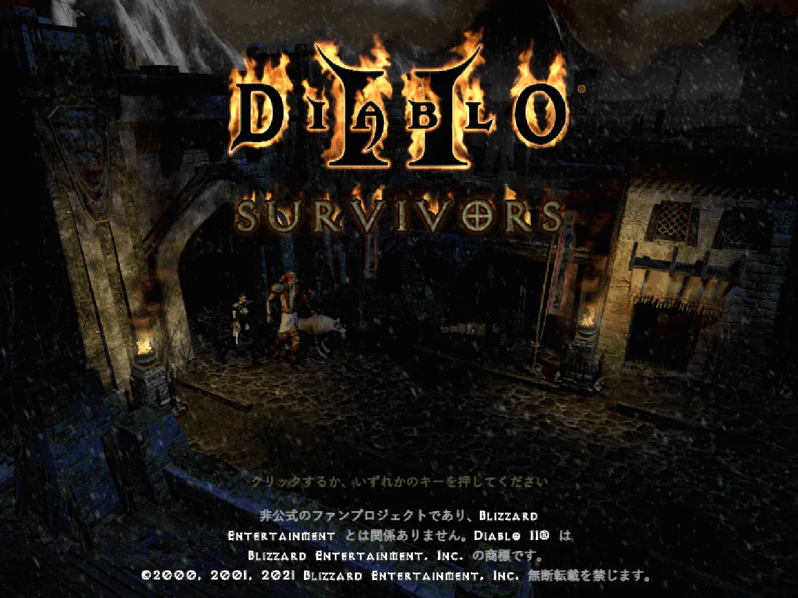
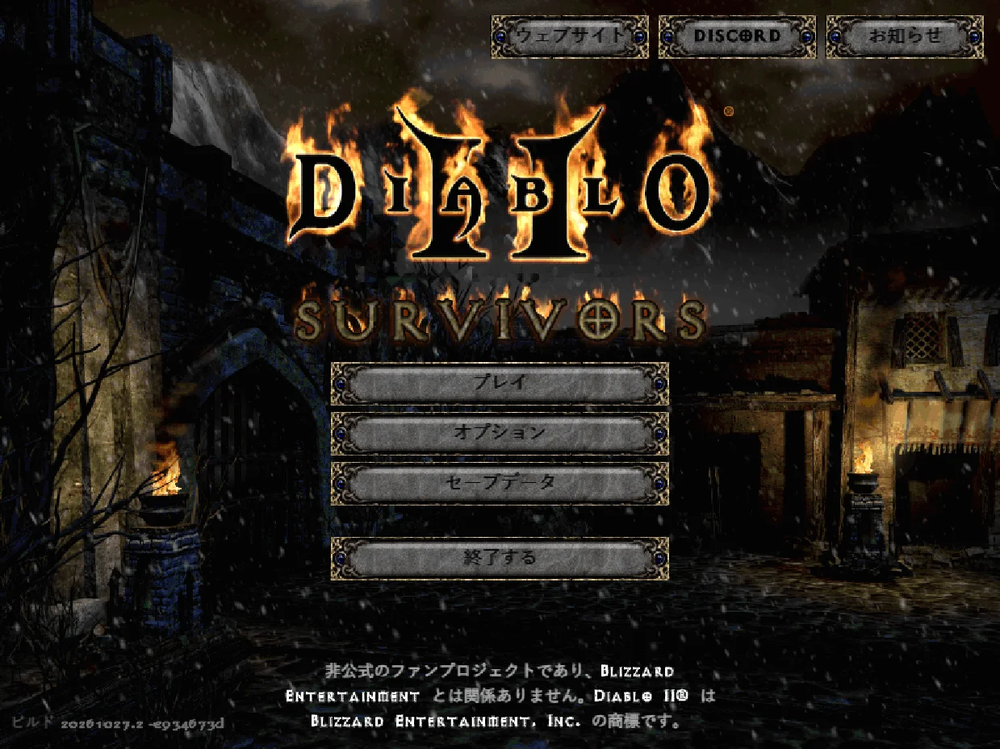
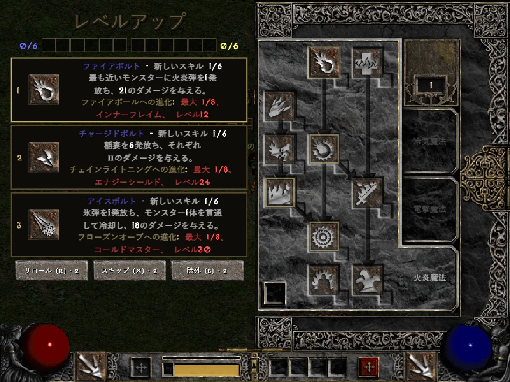
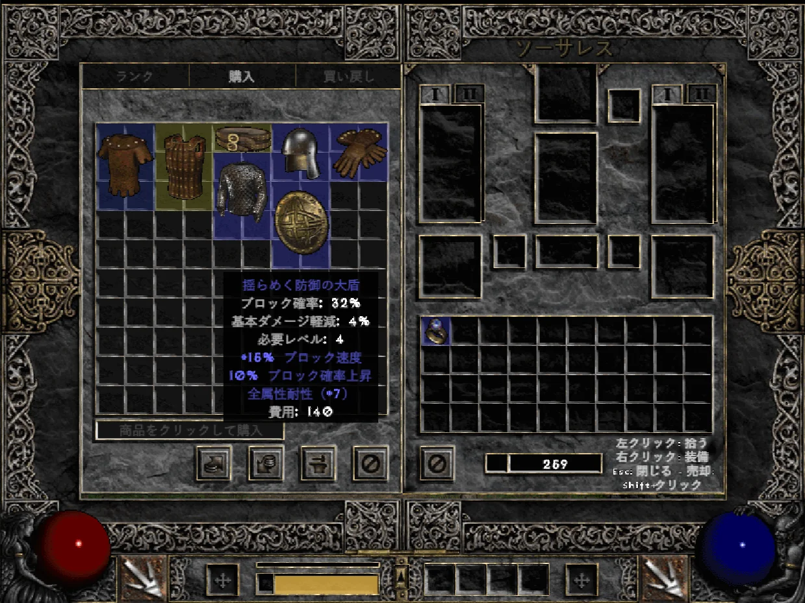
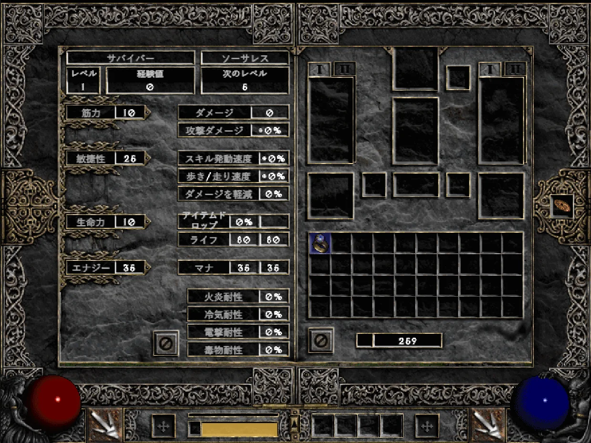
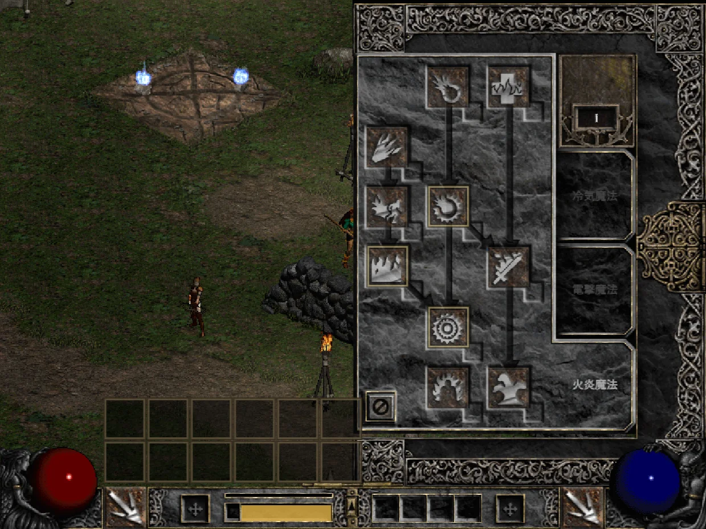
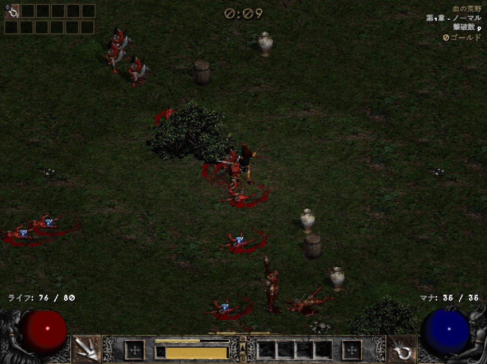
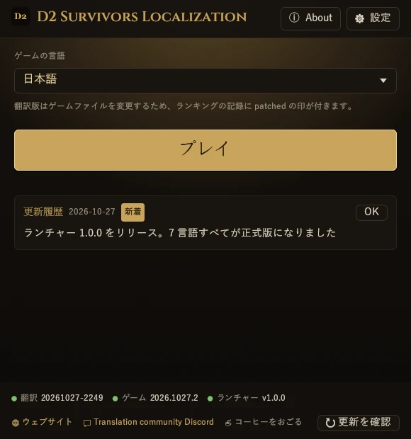

D2 Survivors
作者：framara
『ディアブロ II』の世界を舞台にした、無料の非公式ファンメイドのサバイバー系ゲームです。この翻訳プロジェクトは作者とは無関係です。ゲーム自体の不具合は公式の窓口に報告してください。
非公式ファン翻訳
Diablo 2 Survivors（D2 Survivors／ディアブロ2 サバイバーズ）のゲームそのものを日本語化します。攻略ページではなく、UI・スキル・アイテム・モンスター・レベルアップカードまで日本語に。用語は『ディアブロ II リザレクテッド』の公式訳に準拠しています。ランチャーでワンクリック導入・自動更新、いつでも元に戻せます。
公式のブラウザ版は終了しました。翻訳はデスクトップ版（Windows 用ランチャー）のみ対応です。
ブラウザ版で遊んでいた場合は、ブラウザ版で遊んでいたのと同じブラウザで「ブラウザ版のセーブを移行」（公式ページ・英語）を開いてセーブを .txt でダウンロードし、デスクトップ版のメインメニューの「セーブデータ」（SAVES）→「セーブファイルを開く」（Open a save file）でそのファイルを選んでください。








ゲーム画面：D2 Survivors（framara）、プレイヤー自身の Diablo II ファイルを使用
このプロジェクトが提供するのは翻訳だけで、ゲームのファイルは含まれていません。始める前に、下の公式の入手先から D2 Survivors と『ディアブロ II』を用意してください。
作者：framara
『ディアブロ II』の世界を舞台にした、無料の非公式ファンメイドのサバイバー系ゲームです。この翻訳プロジェクトは作者とは無関係です。ゲーム自体の不具合は公式の窓口に報告してください。
Blizzard Entertainment
D2 Survivors はお使いの PC にある『ディアブロ II』のグラフィックとサウンドを読み込むため、『ディアブロ II リザレクテッド』、または『ディアブロ II』＋『ロード・オブ・デストラクション』（パッチ 1.14）を各自で用意する必要があります。
用語：スキル・アイテム・モンスター・エリアなどの名前は『ディアブロ II リザレクテッド』の公式訳に準拠し、それ以外はこのプロジェクトで翻訳しています。
中国語（繁体字）、中国語（簡体字）、日本語、ドイツ語、フランス語、ロシア語、ポーランド語はすべて正式版です。
翻訳・対応言語・ランチャーの更新です。ランチャーは毎回最新の翻訳を取得するので、ダウンロードし直す必要はありません。
以下は D2 Survivors の作者による更新内容です。私たちは翻訳だけを担当しています。
以下は D2 Survivors の作者による更新内容です。私たちは翻訳だけを担当しています。
以下は D2 Survivors の作者による更新内容です。私たちは翻訳だけを担当しています。
以下は D2 Survivors の作者による更新内容です。私たちは翻訳だけを担当しています。
ゲームのファイルを手で書き換える必要はなく、すべてランチャーが行います。先にゲームを終了してください。ランチャーの画面は選んだ言語で表示されます。
D2 Survivors 公式サイトからデスクトップ版をダウンロードし、ゲームの設定画面で『ディアブロ II』のインストール先を指定して、ゲームが起動することを確認します。
d2s-launcher.exe をダウンロードして、好きなフォルダに置きます。インストールは不要です。
初回は言語の選択画面が出ます。各言語はその言語自身の文字で書かれています。使いたい言語を選んで「→」を押すと、ランチャーの画面もゲームの翻訳もその言語になります。
①「ゲーム」：D2 Survivors を探します（標準は %LOCALAPPDATA%\Programs\D2 Survivors。別の場所なら「フォルダーを選択…」）。②「ディアブロ II」：PC にある『ディアブロ II リザレクテッド』またはクラシック版を探します。見つからなくても「スキップ」できます。③「完了」：必要なら「デスクトップにショートカットを作成」を押してから「プレイ」を押します。初回は翻訳をダウンロードし、元の app.asar を自動でバックアップします。
標準で起動のたびに最新の翻訳を取得し（「設定」の「起動時に翻訳を自動更新」）、ゲームのアップデート後も自動で適用し直します。言語を変えたいときは、メイン画面の「ゲームの言語」で切り替えます。
app.asar が元のファイルに戻ります。%LOCALAPPDATA%\D2SurvivorsLauncher フォルダーを削除します。自分でショートカットを作る場合は、リンク先を下のようにすると、ランチャーの画面を出さずに指定した言語でゲームを起動できます（「デスクトップにショートカットを作成」で作ったものは、画面を開いてすぐにゲームを起動します）。
d2s-launcher.exe --launch --lang ja--launch--play--lang <id>--no-update--update--restore--self-update--statusいいえ。プレイヤーが作った非公式の翻訳で、D2 Survivors の開発者とも Blizzard Entertainment とも関係ありません。
プログラムの部分はそうです。ランチャー、このサイト、ツールのソースコードは GitHub で MIT ライセンス のもと公開しています。ランチャーは公開しているソースコードから GitHub Actions で自動的にビルドしており（ビルド履歴）、各リリースには d2s-launcher.exe.sha256 が付いているので、自分で照合できます。
翻訳データ（辞書）はまだオープンなライセンスではなく、すべての権利を留保しています。詳しくは dict/LICENSE をご覧ください。辞書に含まれる公式訳の用語は Blizzard Entertainment に帰属します。
正式版です。すべての文字を翻訳し、ゲーム内で訳し漏れがないことを確認しました。そのうえで UI の全文と無作為に選んだ 300 件を改めて見直し、見つかった点をもとに辞書全体で約 640 か所を修正しています。用語は『ディアブロ II リザレクテッド』の公式日本語訳に準拠しています。
不自然な訳に気づいたら、ぜひ教えてください。
今のところできません。ランチャーは Windows 版のみで、公式のブラウザ版が終了したため、ブラウザ用のブックマークも提供を終了しました。Mac・Linux・スマホでこの翻訳を使う方法は今のところありません。
ありません。ランチャーが置き換えるのはゲームフォルダ内の resources\app.asar だけで、置き換える前に元のファイルをバックアップします。セーブデータは別の場所にあり、読み込みも変更もしません。
移せます。公式のセーブ移行ページ（英語と韓国語のみ）が、ブラウザに残っているブラウザ版のセーブデータを探して .txt ファイルとしてダウンロードさせてくれます。
必ずブラウザ版で遊んでいたのと同じブラウザ（同じプロファイル）で開いてください。別のブラウザやシークレットウィンドウでは見つかりません。
ダウンロードしたら、デスクトップ版のメインメニューで「セーブデータ」（SAVES）→「セーブファイルを開く」（Open a save file）を選び、その .txt を選べば取り込めます。ハードコアのセーブデータはゲーム内と同じく移せません。
ゲームのアップデートで app.asar が置き換わるため、翻訳は一時的に消えます。いつもどおりランチャーかショートカットから起動すれば、また適用されます。
新しいバージョンの変更が大きく書き換えルールが合わない場合、ランチャーは無理に書き換えず、オリジナルのままゲームを起動して「翻訳を修正中」と表示します。修正が済めば次回の起動で自動的に適用されるので、何もする必要はありません。
翻訳はゲームに組み込まれている韓国語の枠を借りているため、適用すると言語メニューの韓国語が選んだ言語の名前になります。韓国語で遊びたいときは、ランチャーで「한국어 (원본)」を選んで起動してください。
ゲーム内の文字はすべて翻訳済みで、訳し漏れがないことをゲーム内で確認しています。英語が表示される場合は、たいていゲームのアップデートで新しい文字が増えたためです。今後の翻訳の更新で対応し、ランチャーが自動でダウンロードします。いつまでも英語のままなら、ぜひ教えてください。
翻訳言語を選ぶと、ゲームが記録に patched の印を付けます。通常どおりランキングに載せたいときは、ランチャーの「ゲームの言語」で English を選んでください。
ランチャーにはコード署名がありません（署名の証明書は毎年費用がかかります）。そのため、ダウンロードした人が十分に増えるまでは Windows SmartScreen がこの警告を出します。
署名はありませんが、ランチャーのソースコードとビルドの過程はどちらも公開しています。
「詳細情報」を押してから「実行」を押してください。次からは表示されません。ダウンロードはこのサイトか GitHub Releases からだけにしてください。各リリースには d2s-launcher.exe.sha256 が付いていて、certutil -hashfile d2s-launcher.exe SHA256 で照合できます。
ブラウザが「このファイルは一般的にダウンロードされていません」と表示した場合は、ダウンロードのメニューから「保存」を選んでください。
今のところ使えません。ゲーム自体がキャラクター名に英字と韓国語しか使えない仕様です。
誤字・訳抜け・ランチャーの不具合は、翻訳コミュニティの Discord に報告してください。最新情報もそこでお知らせします。
翻訳の誤りやプログラムの不具合は GitHub Issues でも報告できます。
ゲーム自体の不具合（翻訳と関係ないもの）は D2 Survivors のゲーム公式 Discord（英語）に報告してください。
大歓迎です！ すべての言語が正式版になりましたが、翻訳にはまだ良くできるところがあります。不自然な訳や誤字に気づいたら、特にネイティブの方はぜひ教えてください。こちらからご連絡ください。